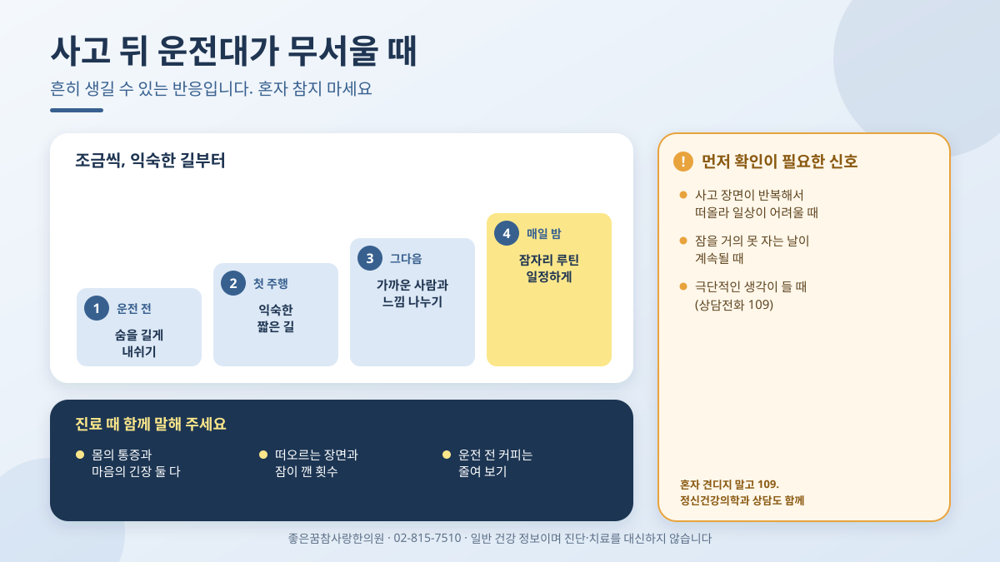

이종호 한의사 감수좋은꿈참사랑한의원 대표원장 (한의사 면허번호 19769)발행 2026-11-23 · 수정 2026-11-25
이 글의 차례
아침 출근길, 주차장에 내려와 차 문을 엽니다. 운전석에 앉는 순간 손바닥에 땀이 배고, 시동을 걸고 거울을 보는데 뒤에서 차 한 대가 다가오는 것만으로 어깨가 움찔합니다. 결국 오늘도 시동을 끄고 버스 정류장으로 걸어갑니다.
사고 뒤 운전대를 다시 잡기가 무서운 것은 흔히 생길 수 있는 반응이라, 저는 혼자 참기보다 몸의 통증과 잠, 두근거림을 함께 살피면서 아주 작은 단계부터 다시 시작해 보시길 권합니다. 사고 장면이 계속 떠오르거나 잠을 거의 못 자는 날이 이어진다면 정신건강의학과 상담을 함께 받는 것이 도움이 됩니다.
진료실에서 이런 말씀을 자주 듣습니다. 다친 데는 이제 많이 괜찮은데 운전석에 앉기가 겁난다고, 남들은 별일 아니라는데 나만 유난인 것 같다고요. 아이를 등원시켜야 하고 출퇴근도 해야 하는데 핸들만 잡으면 가슴이 뛰니 얼마나 답답하셨을까 싶습니다. 저는 그 마음이 약해서 생긴 것이 아니라고 먼저 말씀드립니다.
사고를 당한 쪽이든 낸 쪽이든, 크게 놀란 몸이 같은 위험을 다시 겪지 않으려고 미리 긴장하는 것이니까요.
예전에는 안 아프게 해 드리는 것만으로도 벅찼습니다. 지금은 거기서 한 걸음 더 가고 싶습니다. 다시 힘을 내서 여행도 다니고, 부모님 댁에도 들르고, 하고 싶은 일을 하며 사시는 것입니다. 그렇게 살고 싶으신 것이 당연하고, 의사가 그 부분까지 도울 수 있다고 저는 생각합니다.
사고 뒤 진료도 그래서 목과 허리가 덜 아픈 데서 멈추지 않으려 합니다. 다시 운전대를 잡고 가고 싶은 곳에 가시는 데까지 함께 보겠습니다.
몸이 먼저 기억하는 놀람
크게 놀란 경험은 머리보다 몸이 먼저 기억합니다. 브레이크 밟는 소리, 경적, 사고가 났던 교차로, 비슷한 색의 차만 봐도 심장이 뛰고 손에 땀이 나며 숨이 얕아집니다. 머리로는 괜찮다는 걸 아는데 몸이 말을 듣지 않으니 더 당황스럽지요. 이런 반응은 놀란 기억이 아직 정리되는 과정일 수 있습니다.
통증이 남아 있으면 긴장은 더 오래갑니다. 엑스레이에서 이상이 없다는데 왜 아직 아프냐고 물으시는 분도 많은데, 엑스레이는 주로 뼈를 보기 때문에 근육과 인대의 손상은 잘 보이지 않을 수 있습니다. 고개를 돌려 사각지대를 볼 때마다 목이 당기면 그때마다 사고 순간이 떠오르기 쉽습니다.
사고 뒤 잠이 얕아지면 낮에도 쉽게 예민해지고, 보험 처리나 일 걱정 같은 사고 뒤의 일들도 긴장을 키웁니다. 한의학에서는 놀람과 긴장이 잠과 소화에도 함께 영향을 준다고 보고 몸 전체를 함께 살핍니다.
그렇다고 무섭다는 이유로 아주 오래 손을 놓고만 있으면, 다시 잡을 때 문턱이 더 높게 느껴진다는 분들이 있습니다. 낙상 강연에서 어르신들께 드린 말씀이 떠오릅니다. 한 달만 집에 가만히 있어도 점심 먹으러 나오기가 귀찮아지고, 그 마음이 들면 몸은 더 약해진다는 이야기였습니다.
억지로 밀어붙이자는 것이 아니라, 할 수 있는 만큼씩 끊기지 않게 이어 가자는 뜻입니다.
저는 치료를 찌개를 끓일 때 위에 뜨는 찌꺼기를 하나하나 걷어내는 일에 견주곤 합니다. 목의 통증, 얕은 잠, 핸들 앞의 두근거림을 한꺼번에 없애려 하기보다 지금 올라오는 것부터 하나씩 걷어내자는 마음입니다.
이런 분들을 자주 뵙습니다
아이 등원이나 학원 길을 맡은 부모님들을 자주 뵙습니다. 아이를 태우고 운전한다는 부담이 겹쳐 더 긴장하십니다. 이런 분께는 처음 몇 단계는 아이 없이 혼자, 혹은 믿을 수 있는 어른과 함께 연습하자고 말씀드립니다. 아이를 태우는 일은 혼자 운전이 편해진 다음으로 미뤄도 늦지 않습니다.
출퇴근길에 사고가 났던 교차로를 지나야 하는 직장인도 계십니다. 그 자리를 지날 때마다 숨을 참게 된다고 하시지요. 당분간은 조금 돌아가더라도 다른 길을 쓰고, 그 교차로는 다른 길이 편해진 뒤 맨 나중에 지나 보자고 정합니다.
배달이나 영업처럼 운전이 곧 일인 분들은 쉬기도 어렵습니다. 이럴 때는 몸 상태부터 확인하고, 하루 운전 시간과 거리를 잠시 줄일 수 있는지 함께 고민합니다. 사고 순간 운전대를 꽉 잡고 있어 손목과 팔꿈치가 아프신 분도 많아, 통증 부위를 함께 살핍니다.
다시 운전은 하는데 비 오는 밤이나 사고가 났던 시간대만 되면 유독 힘들다는 분도 계십니다. 이런 분께는 그 조건만 따로 떼어 맨 마지막 단계로 두고, 그 전까지는 낮과 맑은 날의 운전을 충분히 쌓아 보자고 말씀드립니다.
운전은 하지 않는데 조수석이나 뒷자리에 타기만 해도 몸이 굳는 분도 계십니다. 차가 멈출 때마다 발에 힘이 들어가고 손잡이를 꽉 쥐게 된다고 하십니다. 이 역시 놀란 몸의 반응이라, 같은 순서로 천천히 익숙해지는 길을 함께 찾습니다.
운전대 앞으로 돌아가는 작은 단계
저는 다시 운전하려는 분께 먼저 어디까지 가고 싶은지 여쭙니다. 아이 학교 앞까지인지, 회사까지인지, 주말에 부모님 댁까지인지요. 원칙만 앞세워 당분간 운전하지 말라고만 하면, 운전이 생활인 분은 그 말을 지키기 어렵습니다. 그래서 가고 싶은 곳을 정해 두고, 거기까지 가는 길을 잘게 나눕니다.
첫 단계는 차에 앉아 보는 것입니다. 시동을 끈 채 운전석에 5분쯤 앉아 좌석과 등받이, 거울을 맞추고 머리 받침대가 뒤통수 높이에 오는지 봅니다. 숨은 4초쯤 들이쉬고 6초쯤 내쉬며, 내쉬는 쪽을 조금 더 길게 몇 번 이어 보세요. 핸들을 쥔 손에 힘이 많이 들어갔다면 손을 한번 떼었다가 다시 얹어 봅니다.
시동도 걸지 않고 앉아 있는 5분이 별것 아닌 것 같아도, 내 몸에 나는 다시 운전하는 사람이라는 신호를 보내는 일입니다.
진맥을 배울 때 들은 말이 있습니다. 잘 모르겠으면 손을 한번 떼라는 것이었습니다. 손을 다시 얹으면 내가 얼마나 세게 누르고 있었는지부터 알게 됩니다. 핸들도 그렇습니다. 차를 세워 둔 채 손을 잠깐 내려놓았다가 다시 잡아 보면, 어깨까지 잔뜩 힘이 들어가 있었다는 것을 알아차리게 됩니다.
다음은 시동을 걸고 주차장 안을 천천히 몇 바퀴 도는 것입니다. 그다음에는 차가 적은 낮 시간에 동네 길을 10분쯤 다녀옵니다. 처음 몇 번은 믿을 수 있는 사람이 조수석에 앉아 주면 한결 덜 외롭습니다. 혼자 하면 마음이 가라앉기 쉽고, 누군가 곁에 있으면 별것 아닌 한 바퀴도 해낸 일처럼 느껴집니다.
함께 타는 분께는 재촉하거나 놀란 소리를 내지 말고 조용히 곁에 있어 달라고 미리 부탁해 두세요.
그게 편해지면 혼자 익숙한 짧은 길을 다녀오고, 이어서 출퇴근 시간을 피해 조금 긴 길로 넓혀 갑니다. 사고가 났던 길이나 비슷한 교차로, 밤길과 빗길, 고속도로는 맨 나중입니다. 단계마다 두근거림이 0부터 10까지 몇 점인지 적어 두고, 점수가 너무 올라가면 한 단계 내려와도 괜찮습니다. 같은 단계를 며칠, 몇 주 되풀이해도 됩니다.
조급해지는 마음도 압니다. 마음속에는 사고 전에 아무렇지 않게 운전하던 내가 남아 있어서 자꾸 예전 속도를 내려 합니다. 몸은 지금의 몸인데 마음이 예전 속도를 내는 것이지요. 되는 범위에서만 계속하다 보면 그 범위가 서서히 넓어질 수 있고, 의지와 욕심이 너무 앞설 때 탈이 나기 쉽습니다. 오늘 한 번에 해내려 하지 말고 작게, 자주 하세요.
다시 편해지기까지 걸리는 시간은 사람마다 다릅니다. 빠르다고 잘하는 것도, 느리다고 못하는 것도 아닙니다.
운전대를 잡기 전에 몸도 살펴 주세요
운전하기 전에는 고개를 좌우로 돌려 어깨 너머를 볼 수 있는지, 오른발로 브레이크를 끝까지 밟을 때 허리나 무릎이 아프지 않은지 확인해 보세요. 그날 목이 많이 당기거나 팔이 저리다면 운전은 쉬고 진료 때 말씀해 주세요. 운전 전에는 커피를 줄이는 편이 두근거림을 덜 키웁니다.
단계가 충분히 편해진 뒤 처음 먼 길을 나설 때는 중간중간 차를 세워 목과 허리를 풀며 쉬어 가세요.
진통제나 근육이완제, 수면제, 신경안정제처럼 졸림이나 어지럼이 생길 수 있는 약을 드시는 중이라면, 운전해도 되는지 처방한 의사나 약사에게 먼저 확인하세요. 약이 여러 가지일 때는 졸림이나 어지럼이 겹칠 수 있습니다. 전날 잠을 거의 못 잤다면 그날은 연습을 쉬는 것도 좋은 선택입니다.
보험 처리 때문에 사고 영상을 봐야 한다면 잠들기 직전은 피하고, 낮에 누군가와 함께 보시길 권합니다.
스스로 한번 물어보세요. 운전석에 앉기만 해도 손에 땀이 나는가? 사고 장면이 하루에도 여러 번 떠오르는가? 사고 뒤 잠들기 어렵거나 악몽으로 깨는가? 작은 소리에도 깜짝 놀라는가? 술이나 수면제에 기대는 날이 늘었는가? 여러 가지에 해당하고 이런 상태가 한 달 넘게 이어진다면 혼자 버티지 마세요.
얼마나 지켜보고, 언제 진료를 받을까요
사고 뒤 몇 주 동안 잠과 불안이 흔들리는 것은 흔한 반응입니다. 잠과 불안, 운전 단계를 하루 한 줄씩 2주 정도 적어 보세요. 한 달이 지나도 사고 장면이 계속 떠오르고 운전을 비롯한 일상이 어렵다면 정신건강의학과 진료를 받아 보시길 권합니다.
다음과 같은 경우에는 먼저 확인이 필요합니다.
- 사고 장면이 계속 떠오르거나 악몽이 이어져 일상생활이 어려운 경우
- 잠을 거의 못 자는 날이 계속되는 경우
- 술이나 수면제에 기대는 날이 늘어난 경우
- 가슴 통증이나 숨 막힘이 갑자기 심해지는 경우
- 사고 뒤 두통이 점점 심해지거나 구토, 팔다리 저림이나 힘 빠짐이 생긴 경우
- 극단적인 생각이 드는 경우
가슴 통증이나 숨 막힘이 갑자기 심해지거나, 두통이 점점 심해지며 구토나 팔다리 힘 빠짐이 함께 오면 가까운 응급실에서 바로 확인을 받으세요. 마음이 많이 힘들고 극단적인 생각이 들 때는 혼자 견디지 마시고 ☎ 109로 바로 전화해 이야기를 나눌 수 있습니다. 처방받은 약은 처방한 의사와 상의 없이 줄이거나 끊지 않습니다.
좋은꿈참사랑한의원에 처음 오시면
처음 오시면 저는 사고가 언제, 어떻게 났는지, 그때 어느 자리에 타고 계셨는지부터 여쭙니다. 지금 가장 힘든 점이 통증인지, 잠인지, 운전석 앞의 두근거림인지 들려주시고, 다른 병원에서 받은 검사와 치료 내역, 드시는 약도 알려 주세요. 마음 이야기는 편하신 만큼만 하셔도 됩니다.
그다음 잠시 숨을 고르신 뒤 양손의 맥을 짚고, 필요하면 혀와 배를 살핍니다. 긴장한 채 서둘러 오신 직후에는 맥도 달라지기 때문입니다. 아픈 자리를 눌러 보고 고개를 돌리는 동작을 함께 확인하며, 필요하다고 판단되면 초음파로 근육과 힘줄을 봅니다. 통증에 맞춰 침·약침·추나를 정하고, 필요하면 IS400 온열 같은 물리치료를 이어서 씁니다.
자동차보험 처리 여부와 범위는 방문 전 전화로 확인해 주세요.
저는 제 한의학을 현실적인 한의학이라고 부릅니다. 사고 전으로 시간을 되돌려 드릴 수는 없지만, 지금의 몸으로 다시 가고 싶은 곳에 가실 수 있게 돕는 것은 제 일입니다. 그러려면 이분이 얼마나 운전하고 싶은지, 무엇이 힘든지, 어제는 어땠는지를 여쭈어야 합니다.
어느 단계가 버거운지는 환자분이 가장 잘 아십니다. 제가 정한 단계가 맞지 않으면 그건 아니라고 편하게 말씀해 주세요. 저는 거기서부터 다시 듣겠습니다.
진료실에서는 둘이 아니라 셋이 이야기한다고 저는 생각합니다. 환자분, 환자분의 맥, 그리고 저입니다. 다시 오시면 지난번 정한 단계가 어디까지 되었는지, 두근거림 점수와 잠은 어땠는지부터 이어서 여쭙습니다.
마치며
다시 핸들을 잡아 보려는 마음은 그 자체로 귀합니다. 다만 그 크기를 조금 줄여 놓고, 그 안에서 꾸준히 하시면 됩니다. 어제보다 더 멀리가 아니라, 어제처럼 오늘도 운전석에 한번 앉아 보는 것부터 권합니다.
지금 할 수 있는 나의 분량이 있습니다. 사고 전보다 적어 보여도 결코 적지 않습니다. 사람은 생각보다 쉽게 낙담하니, 못 한 날이 있어도 스스로를 탓하지 말고 다음 날 다시 하시면 됩니다.
다음에 오시면 지난 한 주 동안 운전석에 몇 번 앉아 보셨는지, 그때 두근거림이 몇 점이었는지부터 여쭙겠습니다.
함께 읽으면 좋은 글
- 교통사고 뒤 운전이 무섭고 장면이 떠오를 때는 어떻게 지내면 되나요?
- 교통사고 뒤 불안하고 잠을 못 잘 때는 어떻게 살피나요?
- 운전석 자세를 어떻게 맞추면 허리와 목이 덜 아픈가요?

몸이 먼저 기억하는 놀람
- 크게 놀란 경험은 머리보다 몸이 먼저 기억합니다.
- 브레이크 밟는 소리, 경적, 사고가 났던 교차로, 비슷한 색의 차만 봐도 심장이 뛰…
이런 분들을 자주 뵙습니다
- 아이 등원이나 학원 길을 맡은 부모님들을 자주 뵙습니다.
- 아이를 태우고 운전한다는 부담이 겹쳐 더 긴장하십니다.
운전대 앞으로 돌아가는 작은 단계
- 저는 다시 운전하려는 분께 먼저 어디까지 가고 싶은지 여쭙니다.
- 아이 학교 앞까지인지, 회사까지인지, 주말에 부모님 댁까지인지요.
운전대를 잡기 전에 몸도 살펴 주세요
- 운전하기 전에는 고개를 좌우로 돌려 어깨 너머를 볼 수 있는지, 오른발로 브레이크를…
- 그날 목이 많이 당기거나 팔이 저리다면 운전은 쉬고 진료 때 말씀해 주세요.
자주 묻는 질문
시간이 지나면 저절로 괜찮아지나요?
나아지는 경우가 많지만, 오래가면 혼자 견디지 말고 상담을 받아 보세요.
한의원에서 불안도 이야기해도 되나요?
네. 몸의 통증과 함께 잠과 긴장도 같이 여쭙습니다.
운전을 당분간 쉬어야 하나요?
불안이 심할 때는 무리하지 말고, 익숙한 짧은 길부터 함께 탈 사람과 다시 시작해 보세요. 일상에 지장이 크면 상담을 함께 받는 것이 좋습니다.
잠들기 전 사고 장면이 떠오르면 어떻게 하나요?
숨을 천천히 길게 내쉬며 몸의 긴장을 풀어 보시고, 이런 밤이 자주 이어지면 진료 때 꼭 말씀해 주세요.
진통제나 근육이완제를 먹는 중인데 운전해도 되나요?
약에 따라 졸리거나 어지러울 수 있어, 운전해도 되는지는 처방한 의사나 약사에게 먼저 확인해 주세요. 약은 상의 없이 줄이거나 끊지 않습니다.
좋은꿈참사랑한의원은 재진 때 지난번 이야기부터 이어서 여쭙니다. 진료시간과 예약은 오시는 길에서 확인하세요.
어디서 상담받을 수 있나요?
좋은꿈참사랑한의원은 서울 동작구 만양로2길 2 신성빌딩 3층·5층(서울 동작구 상도동, 7호선 상도역 3번 출구 근처)에 있습니다. 한의사 3명(이종호 대표원장, 조영기 수석진료원장, 정원영 진료원장)이 진료합니다. 진료시간은 평일 09:30~20:00(점심 13:00~14:00), 토·일·공휴일 09:30~15:00이며, 방문 전 전화로 확인을 권합니다. 예약은 네이버 예약, 카카오톡 상담, 전화 02-815-7510로 받습니다.
이 글은 일반적인 건강 정보이며 개인의 진단이나 치료를 대신하지 않습니다. 증상이 있거나 복용 중인 약이 있다면 진료를 통해 확인하세요. 치료 효과는 개인마다 다를 수 있습니다.
작성 기준: 일반적으로 알려져 있는 건강 정보를 참고해 정리했습니다(대표원장 감수). 증상 기록은 1~2주 동안 하루 1회, 비슷한 시간에 적어 오시면 지난 상태와 비교하기 쉽습니다.